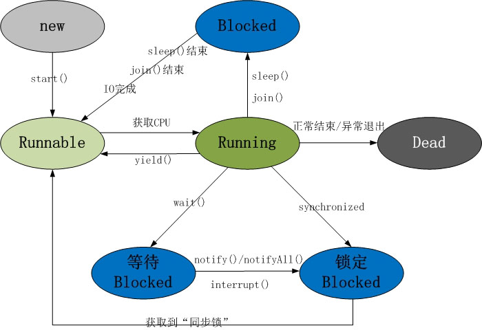

线程是程序执行流的最小单元。线程是进程中的一个实体，是被系统独立调度和分派的基本单位，线程自己不拥有系统资源，只拥有一点儿在运行中必不可少的资源，但它可与同属一个进程的其它线程共享进程所拥有的全部资源。一个线程可以创建和撤消另一个线程，同一进程中的多个线程之间可以并发执行。
不能再继承其他类(Java单继承)，同份资源不共享。
多个线程共享一个目标资源，适合多线程处理同一份资源。该类还可以继承其他类，也可以实现其他接口。

图片来自网络
当程序使用new创建一个线程后，该线程处于新建状态，此时他和其他java对象一样，仅仅由Java虚拟机为其分配内存并初始化成员变量值。【 Thread r = new Thread()】
当线程对象调用start()方法后， 该线程处于就绪状态，线程计入线程队列排 队，此时该状态线程并未开始执行，它仅表示可以运行了。至于该线程何时运行，取决于
JVM线程调度器的调度。【 r.start() 】
若处于就绪状态的线程获得了CPU，开始执行run()线程执行体，该线程处于执行状态。
线程运行过程中需要被中断，目的是是其他的线程获得执行的机会。该状态就会进入阻塞状态。
注意：阻塞状态不能直接转成运行状态，阻塞状态只能重新进入就绪状态。
run()执行完成，线程正常结束;线程抛出未捕获的Exception或Error; 调用线程的stop()。(易导致死锁，不推荐)
注意：主线程结束后，其他线程不受其影响，不会随之结束;
一旦子线程启动起来后，就拥有和主线程相等地位，不受主线程影响。
join方法：调用join方法的线程对象强制运行，该线程强制运行期间，其他线程无法运行，必须等到该线程结束后其他线程才可以运行，有人也把这种方式称为联合线程。
后台线程，处于后台运行，任务是为其他线程提供服务。也成为“守护线程”或“精灵线程”。JVM的垃圾回收就是典型的后台线程。特点是，若所有的前台线程都死亡，后台线程自动死亡。
线程休眠，让执行的线程暂停一段时间，进入阻塞状态。调用该方法后，在指定时间段内，该线程不会获得执行的机会。
每个线程都会有优先级，优先级的高低只和线程获得执行机会的册数多少有关。
并非线程优先级越高的就一定先执行，哪个线程的优先级运行取决于CPU的调度。
默认情况下main线程具有普通的优先级，而它创建的线程也具有普通优先级。
Thread对象的setPriority(int x)和getPriority()来这是和获得优先级。
MAX_PRIORITY:值是10
MIN_PRIORITY:值是1
NORM_PRIORITY:值是5(主方法默认优先级)
导致安全问题的出现原因：多个线程访问出现延迟，线程随机性。
注：线程安全问题在理想状态下，不容易出现，但一旦出现对软件的影响很大。可以通过Thread.sleep(long time)方法来简单模拟延迟情况。
当多个线程访问同一份数据的时候，很容易出现线程安全的问题，让多个操作在同一时间段内只能有一个线程进行，其他线程要等到该线程完成后才可以继续执行，例如银行取钱。
public class ZhangHu
{
private String name;
private int number;
public ZhangHu(String name,int number){
this.name = name;
this.number = number;
}
public void setName(String name){
this.name = name;
}
public void setNumber(int number){
this.number = number;
}
public String getName(){
return name;
}
public int getNumber(){
return number;
}
}
---
public class QuQian implements Runnable
{
private ZhangHu zhanghu;
private int money;
public QuQian(ZhangHu zhanghu,int money){
this.zhanghu = zhanghu;
this.money = money;
}
public void run(){
try{//问题:不加这个的话只有第一个start()先执行
Thread.sleep(100);
}catch(Exception e){
e.printStackTrace();
}
//synchronized(zhanghu){//问题:没加这个锁 也没有输出都取出来的情况
if(zhanghu.getNumber()>=money){
zhanghu.setNumber(zhanghu.getNumber()-money);
System.out.println("取钱成功，取走了"+money+"元，余额是"+zhanghu.getNumber());
}else{
System.out.println("余额不足,当前余额"+zhanghu.getNumber()+"差"+(money-zhanghu.getNumber()));
}
//}
}
}